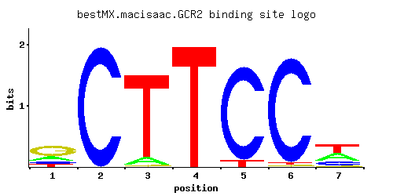

GCR2
YNL199C
Transcriptional activator of genes involved in glycolysis; interacts and functions with the DNA-binding protein Gcr1p
Best-performing DNA-binding model.

View and copy the recommended matrices ↘
A | 0.213 0.001 0.082 0.001 0.001 0.001 0.377 C | 0.131 0.997 0.001 0.001 0.932 0.967 0.197 G | 0.541 0.001 0.016 0.001 0.001 0.016 0.033 T | 0.115 0.001 0.901 0.997 0.066 0.016 0.393
A | 21 0 8 0 0 0 37 C | 13 99 0 0 93 96 19 G | 54 0 1 0 0 1 3 T | 11 0 90 99 6 1 39
A | -0.41 -5.77 -1.36 -5.77 -5.77 -5.77 0.16 C | -0.32 1.71 -5.19 -5.19 1.64 1.68 0.09 G | 1.10 -5.19 -2.42 -5.19 -5.19 -2.42 -1.70 T | -1.02 -5.77 1.04 1.14 -1.58 -3.00 0.21
Alternative candidate matrices 2
Historical matrix candidates from the original ScerTF database. Expand a source to inspect its original logo, scores, and matrix values.
GCR2_AFoat et. al.P = 3.20e-06View matrix ↘
GCR2_BFoat et. al.P = 6.48e-07View matrix ↘
Gene-level annotations and interactions.
Genes bound in ChIP-chip experiments 91 genes
YAL022C, YBL001C, YBR012W-A, YBR012W-B, YBR159W, YBR196C, YCR024C, YDL122W, YDR003W, YDR042C, YDR048C, YDR050C, YDR098C, YDR098C-A, YDR098C-B, YDR179C, YDR179W-A, YDR210W-C, YDR240C, YDR279W, YDR526C, YEL047C, YEL055C, YER007C-A, YER013W, YER177W, YER179W, YGL134W, YGL202W, YGR038C-A, YGR084C, YGR085C, YGR156W, YGR190C, YGR192C, YGR212W, YGR263C, YGR265W, YHR182W, YIL014W, YJL003W, YJL004C, YJL049W, YJL148W, YJL203W, YJL204C, YJR009C, YJR044C, YJR100C, YJR137C, YJR138W, YKL043W, YKL060C, YKL152C, YLL032C, YLR027C, YLR043C, YLR044C, YLR189C, YLR190W, YLR195C, YLR196W, YLR261C, YLR262C, YLR264W, YLR354C, YLR368W, YML055W, YML056C, YMR193C-A, YMR257C, YMR267W, YNL009W, YNL040W, YNL041C, YNL066W, YNL097C, YNL111C, YNR050C, YOL023W, YOL121C, YOR102W, YOR138C, YOR140W, YOR360C, YPL034W, YPL251W, YPL253C, YPL257W-A, YPL257W-B, YPR109W
Genes affected by TF deletion 475 genes
YBL084C, YBR030W, YBL086C, YBR006W, YCR010C, YCR038C, YCR012W, YCR014C, YCR042C, YDR034C-C, YDR368W, YER172C, YER147C, YGL230C, YHL042W, YHL044W, YHL048W, YJR048W, YLR214W, YNL018C, YNL052W, YOR192C-A, YAL034W-A, YAL064W-B, YBR187W, YBR189W, YDL131W, YDR220C, YDR252W, YDR222W, YGL043W, YGR124W, YHR174W, YKL043W, YKL105C, YKL107W, YLR432W, YMR220W, YMR162C, YNL239W, YOR065W, YOR377W, YPL017C, YPL049C, YCR057C, YDR207C, YCR013C, YHL015W, YIL111W, YJR015W, YLR243W, YMR040W, YML113W, YMR011W, YOR222W, YOR254C, YPL240C, YPL210C, YAL065C, YAL036C, YAL067C, YAL038W, YAL069W, YBR155W, YHR112C, YJL052W, YKL106W, YLR089C, YNL238W, YNL240C, YPL018W, YPL050C, YDR050C, YBR092C, YGL262W, YGR033C, YGR065C, YHR057C, YJR114W, YJR145C, YLL034C, YLR340W, YLR372W, YMR105C, YOL104C, YOL077C, YOR289W, YPL266W, YPL268W, YPR048W, YOR359W, YBL027W, YBR283C, YDL226C, YER055C, YGL103W, YGL135W, YGR214W, YHR210C, YIL018W, YJL177W, YJL151C, YJL215C, YLR156W, YLR186W, YML054C, YMR254C, YMR290C, YNL301C, YNL303W, YNL307C, YPL112C, YPL146C, YJL050W, YBR093C, YBR067C, YDR125C, YDR161W, YFR004W, YLR339C, YLR341W, YMR131C, YNL112W, YNL178W, YOL139C, YOR344C, YOR318C, YMR238W, YBL058W, YBR288C, YCL020W, YDR281C, YGL076C, YGR211W, YHR211W, YJL208C, YLR181C, YML053C, YML026C, YML086C, YML028W, YMR315W, YPL079W, YPL081W, YIR006C, YBR012C, YHR001W-A, YIL090W, YLR224W, YMR020W, YML125C, YNL061W, YNR071C, YOL056W, YOR197W, YOR229W, YOR199W, YOR201C, YPL245W, YMR129W, YBR169C, YDL070W, YDL076C, YGL021W, YGR160W, YGR105W, YHR184W, YKL051W, YKL115C, YKL086W, YLR036C, YLR100W, YLR038C, YLR441C, YML008C, YMR170C, YNL217W, YNL281W, YOR043W, YBL092W, YCL064C, YIL087C, YIL121W, YJR025C, YKR048C, YLR285W, YML120C, YMR049C, YOL052C, YOL022C, YOR260W, YOR198C, YPL183C, YPL249C-A, YBR196C, YGR159C, YJL122W, YLR099C, YLR101C, YLR409C, YMR195W, YMR171C, YNL248C, YNL220W, YOR040W, YPL026C, YHR065C, YIR007W, YJR124C, YLR348C, YLR380W, YOL088C, YOR355W, YOR298W, YPR060C, YAR073W, YBR265W, YCL030C, YDR290W, YER036C, YER038C, YGL111W, YGR254W, YGR192C, YIL022W, YHR215W, YLR192C, YLR196W, YMR291W, YMR318C, YMR296C, YPL090C, YFL014W, YJL062W, YBR137W, YHR094C, YIR035C, YJR123W, YLR004C, YLR349W, YMR108W, YMR142C, YOL143C, YPL273W, YAR071W, YAR075W, YBR296C, YDR346C, YER062C, YGL148W, YGR187C, YIL053W, YHR216W, YKL181W, YLR129W, YLR159W, YLR161W, YML063W, YMR319C, YMR321C, YMR323W, YNR001C, YNR034W, YNR038W, YPL151C, YLR232W, YOL027C, YOL064C, YDR345C, YAR028W, YBR239C, YBR177C, YDR261W-A, YGR138C, YKL060C, YKL092C, YLR449W, YOR393W, YEL054C, YBL101W-A, YDR417C, YGL188C, YLR258W, YLR231C, YMR056C, YML130C, YNL064C, YNL096C, YNL035C, YNL066W, YNR072W, YOR272W, YOR242C, YPL220W, YPL226W, YJR041C, YDL081C, YDL083C, YFR047C, YGR139W, YJL102W, YLR073C, YLR448W, YMR203W, YMR235C, YMR179W, YMR209C, YNL256W, YNL260C, YNL290W, YOR018W, YOR050C, YPL030W, YPL061W, YPL063W, YPR093C, YPR156C, YBR142W, YCR095C, YDL021W, YDR510W, YGR019W, YJL034W, YKL001C, YLR354C, YLR356W, YOL124C, YOL156W, YOL126C, YOR361C, YCL038C, YDR323C, YGL123W, YKL153W, YKL184W, YLR198C, YML070W, YMR272C, YMR304C-A, YNR012W, YBR143C, YCR092C, YDR174W, YDR479C, YFL060C, YGR042W, YHR072W, YIR012W, YJR158W, YLR008C, YLL045C, YLR355C, YMR116C, YMR146C, YMR121C, YNL128W, YNL160W, YNL132W, YOL119C, YOL123W, YPL281C, YPR061C, YCL001W-A, YER067W, YGR231C, YJL196C, YKL152C, YKL156W, YLR197W, YML073C, YNR015W, YPL093W, YPL131W, YER091C, YBR054W, YBR024W, YGL191W, YIL170W, YJR046W, YNL075W, YNL109W, YPL197C, YPL199C, YAL060W, YAL062W, YAL064C-A, YBR179C, YBR183W, YDL124W, YGL037C, YHR170W, YJL139C, YJL079C, YKL066W, YLR050C, YLR082C, YLR114C, YMR182C, YMR214W, YOR091W, YOR095C, YBR021W, YCR005C, YDR033W, YDR395W, YFL002W-B, YGL253W, YHL033C, YIL107C, YIL171W, YJR103W, YJR045C, YMR062C, YMR036C, YNL108C, YOL038W, YPL198W, YPL202C, YKL009W, YAR031W, YBR244W, YDR210W-A, YDR239C, YEL037C, YFR055W, YGL032C, YHR169W, YHR203C, YKL067W, YML018C, YMR181C, YMR215W, YPL075W, YBR116C, YDL023C, YDR120C, YGR085C, YHR046C, YJL043W, YLL024C, YMR093W, YNL199C, YNL141W, YOL132W, YOR309C, YPR006C, YCL005W, YCL040W, YCL042W, YIL011W, YJL169W, YJR009C, YLR174W, YLR178C, YMR278W, YMR310C, YNR022C, YDL022W, YDL053C, YGR052W, YHR108W, YJL044C, YLR363C, YLR395C, YNL134C, YNL168C, YNL200C, YOR306C, YOR368W, YOR343C-A, YPR069C, YPR009W, YPR011C, YLR179C, YML081C-A
Genes supported by both experiments 11 genes
YBR196C, YDR050C, YGR085C, YGR192C, YJR009C, YKL043W, YKL060C, YKL152C, YLR196W, YLR354C, YNL066W
Predicted TF–TF partners 1 genes
TOD6